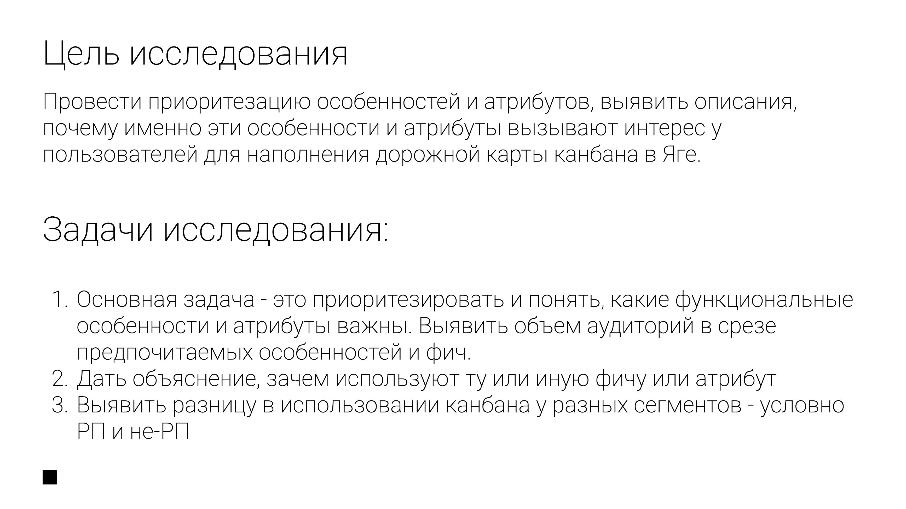

Пользователи путают Ягу с Trello, Jira и CRM одновременно - и это не безобидная путаница.

Кабинетное исследование конкурентных канбан-досок плюс сбор требований у аналитиков, продактов и разработки. Список из полусотни возможных фич сузили опросником Кано и глубинными интервью до 25 приоритетных.
Ягу воспринимают по-разному с точки зрения продуктового позиционирования, и эта путаница создаёт барьеры в работе с доской: часть пользователей видят классический канбан (как в Trello), большая часть - замену Jira с иерархией задач, часть - CRM-систему.
Кейс Solar РТК показал: мнения разделяются даже внутри одной команды - проектный менеджер ожидает иерархию задач и автоматизацию, скрам-мастер - чек-листы, метрики на карточках и WIP-лимиты.
Автоматическую архивацию задач в статусе «Готово» респонденты в основном воспринимают негативно - к старым задачам обращаются чаще, чем кажется (иногда через 3+ месяца).
Из-за путаницы в позиционировании в дорожную карту вошла визуализация связей между задачами прямо на виде «Доска» (родительская задача = сумма метрик дочерних) - фичу сочли обязательной и на количественных, и на качественных данных. Чек-листы как способ создания подзадач тоже приоритизировали в беклоге.